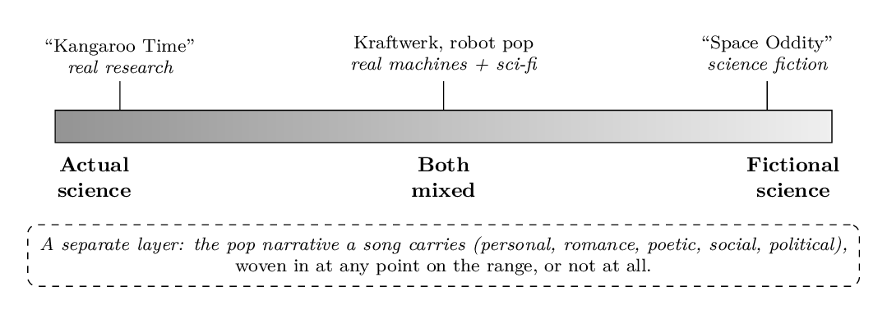
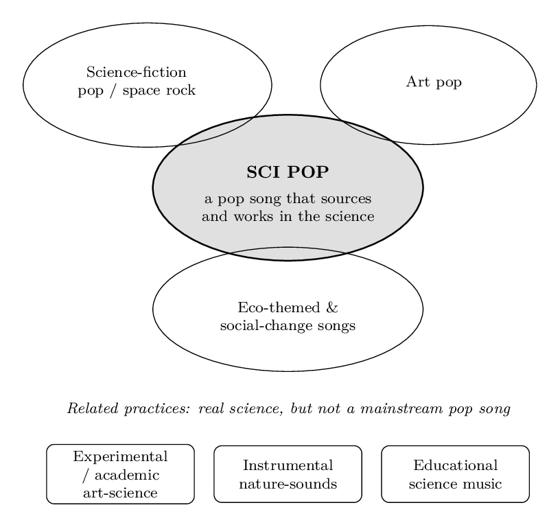

A coined term
Sci pop
Commercial pop songs that carry science as aesthetic, theme or method, developed here from the founding paper.
Sci pop is a term for commercial pop songs that carry science as aesthetic, theme or method. A song is sci pop on two conditions: it is a real, contemporary pop song, and it sets out to source from science, its knowledge and phenomena, its methods, its instruments and spaces, and the social world of scientists. The science can range from a peer-reviewed finding to the images a culture dreams about science, and it reaches across the whole field, from the natural world to human society and the technologies we build. Sci pop is a coined term, developed here from the founding paper.
Jump toWhat it isClose to art popThe first two songsEVER+GROWWhat it opensWho builds it
What it is
A sci pop song works first as a pop song. Science enters as theme, image and meaning, so a listener meets it as feeling first and the science arrives through the music. Two conditions make it sci pop: it is a commercial pop song, and it carries an intention around science, sourcing from it with genuine curiosity rather than wearing a look. The science can come from a peer-reviewed finding or from the images a culture dreams about science, and a song can travel the whole range between them.

Science enters a song three ways: as aesthetic, the sound and the look, from science-shaped production to the video and how the performer moves; as theme, the subject and the story the song tells; and as method, a scientific way of making, such as sampling the sound a phenomenon makes or sonifying a dataset. A song can use one of the three or all of them. A sci pop song can wear any contemporary pop sound; the constant is that science genuinely shapes the work, carried inside a real pop song.

Sci pop is entertainment pop that carries science, in the way science fiction is entertainment cinema. That sets it apart from a song that wears science only as scenery, and from educational science songs that teach a topic directly and sit closer to science communication. One way to write it is the interconnected-narrative method, a four-step practice that grows a scientific story and a human story from one theme and ties them together through words, sounds and images that read true in both at once. The method is one route in, and the genre stays open to each artist's own approach.
Close to art pop
Of the genres already on the shelf, sci pop sits closest to art pop, the strand of pop that carries a strong concept and a coherent visual world. On a record-shop shelf a sci pop album would sit beside Björk's Biophilia, David Bowie's concept records and Kate Bush, artists who built a whole world around an idea and still made pop for a wide audience.
Björk's Biophilia is the closest working example. She wrote the songs first from her own curiosity, reading popular science and watching documentaries, then brought in experts for the detail. Sci pop asks the same of any artist: active curiosity, and expert help where the detail needs it. Genuine interest in the science and care to get it right are enough.
Sci pop rides on any contemporary pop sound, so it needs no sound of its own to exist. The concept can also grow its own signature, a recognisable sci pop sound built from science-shaped production: sampling the sounds a phenomenon makes, sonifying data, and sound design drawn from the science of an instrument. That signature is still being developed, and it is being developed inside real, current pop, the kind made to be heard widely. EVER+GROW is the album setting it out, uplifting and anthemic.
The first two songs
Sci pop grew from two songs. Kangaroo Time and Cabra da Peste are where the craft was first worked out, across two sciences and two languages.
Kangaroo Time is the starting point. It grows from Dr WELI's peer-reviewed doctoral research on the personality and social life of wild eastern grey kangaroos, and it won the AAAS Dance Your PhD Global Winner 2024. The title phrase and the lyric carry the kangaroo science and a human story of belonging at the same time. The deep behavioural-ecology story behind it sits on the WildWooHoo x WELI page.
Cabra da Peste runs the same craft in Portuguese, built from Dr WELI's undergraduate research on goat behaviour. Nearly every key term reads as a double, where the mating season is also Carnival and the goat is also a tough, charismatic figure. Two sciences, two languages, one method.
EVER+GROW
EVER+GROW is the album that sets the sci pop sound. It is built from science, technology and nature, and it grows over time. It releases the way an eastern grey kangaroo grows: fast at first, then a song or two each year, until it closes. That is sci pop working on the form as well as the subject. Recording runs from December 2026, launching from Q2 2027. The full story, with the cover, sits under Commission a work.
What it opens
Sci pop names a place for science, and for scientists, in popular music. It opens that place to scientists who make music and to science-enthusiast creatives drawn to the same material.
- The scientist-musician, working from their own research.
- The musical science consultant, advising a song for accuracy while another person writes and sings it.
- The artist working honestly from the published record.
It also widens the popular picture of science. The field scientist, the biologist and the ecologist in the natural world stand beside the lab figure, and the social life of a goat herd or a wild kangaroo sits beside the rocket and the circuit board. As more artists and more fields take part, the popular idea of who does science and what science is about grows wider.
Who builds it
WildWooHoo coins and builds sci pop, gathering the work, the artists and the science-consultancy layer. The featured artist is WELI, a Sydney-based behavioural ecologist and recording artist, whose academic and performance work is documented at drweli.com.
The full framework is set out in the founding paper, deposited open access on Zenodo. It opens:
Sci pop is a proposed term for popular songs that carry science as aesthetic, theme or method. […] The article's contribution is one act of naming and consolidation: it fixes a term, defines it as a framework any artist can use, and gives that framework a single new organising principle, a range from actual research to the fictional cultural imaginary.
Read the founding paper: Menário Costa, W. (2026), Sci pop: science as aesthetic, theme and method in contemporary popular music, Zenodo, CC BY 4.0.
If you make music from science, or you research a field you would like to hear in a song, start a conversation.
Also called
Sci pop is also searched as science pop music, science-themed music, science songs, songs about science, science-inspired pop, and science communication through music. They name the same idea: pop songs that carry science.
Is sci pop the same as science pop music or songs about science?
Yes. Sci pop is WildWooHoo's name for science pop music: pop songs that carry science as theme and image. People also call it science-themed music, science songs, science-inspired pop, or music about science.
Is sci pop science communication or STEAM?
It overlaps with both. Sci pop carries science through popular music, so it works as science communication and connects to STEAM, but it is first a pop song, made to be heard as music, with the science arriving through the song.
What is an example of a sci pop song?
Kangaroo Time, the AAAS Dance Your PhD Global Winner 2024, and Cabra da Peste. Each grows a pop song from Dr WELI's research.
Can a scientist make sci pop music?
Yes. Sci pop opens a place for scientist-musicians working from their own research, for musical science consultants advising a song for accuracy, and for artists working from the published record.
Who coined the term sci pop?
WildWooHoo, the Sydney science-art studio founded by Dr WELI, coined and builds sci pop. The featured artist is WELI.